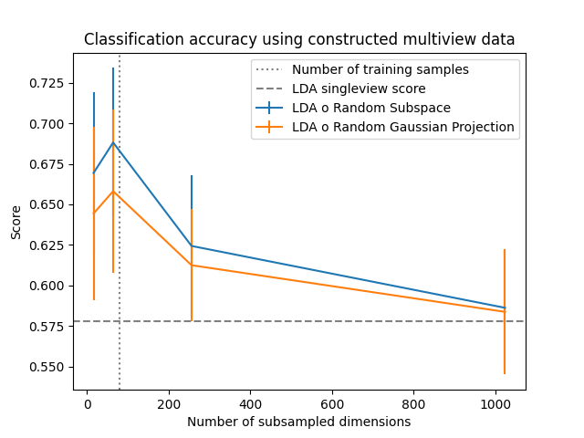

Note
Click here to download the full example code
Constructing multiple views to classify singleview data¶
As demonstrated in "Asymmetric bagging and random subspace for support vector machines-based relevance feedback in image retrieval" (Dacheng 2006), in high dimensional data it can be useful to subsample the features and construct multiple classifiers on each subsample whose individual predictions are combined using majority vote. This is akin to bagging but concerns the features rather than samples and is how random forests are ensembled from individual decision trees. Here, we apply Linear Discriminant Analysis (LDA) to a high dimensional image classification problem and demonstrate how subsampling features can help when the sample size is relatively low.
A variety of possible subsample dimensions are considered, and for each the number of classifiers (views) is chosen such that their product is equal to the number of features in the singleview data.
Two subsampling methods are applied. The random subspace method simply selects a random subset of the features. The random Gaussian projection method creates new features by sampling random multivariate Gaussian vectors used to project the original features. The latter method can potentially help in complicated settings where combinations of features better capture informative relations.
It is clear that subsampling features in this setting leads to improved out-of-sample accuracy, most likely as it reduces overfitting to the large number of raw features. This is confirmed as the accuracy seems to peak around when the number of features is equal to the number of samples, at which point overfitting becomes possible.
Out:
downloading Olivetti faces from https://ndownloader.figshare.com/files/5976027 to /home/circleci/scikit_learn_data
# Author: Ronan Perry
# License: MIT
import numpy as np
import matplotlib.pyplot as plt
from sklearn.preprocessing import StandardScaler
from sklearn.discriminant_analysis import LinearDiscriminantAnalysis
from sklearn.pipeline import make_pipeline
from sklearn.model_selection import cross_val_score, ShuffleSplit
from sklearn.datasets import fetch_olivetti_faces
from mvlearn.compose import RandomSubspaceMethod, RandomGaussianProjection, \
ViewClassifier
# Load the singleview Olivevetti faces dataset from sklearn
X, y = fetch_olivetti_faces(return_X_y=True)
# The data has 4096 features. The following subspace dimensions are used
dims = [16, 64, 256, 1024]
# We are interested in when the low sample size, high dimensionality setting
train_size = 0.2
rsm_scores = []
rgp_scores = []
# Initialze cross validation
splitter = ShuffleSplit(n_splits=5, train_size=train_size, random_state=0)
# Compute singleview score, using all dimensions
singleview_clf = make_pipeline(StandardScaler(), LinearDiscriminantAnalysis())
singleview_scores = cross_val_score(singleview_clf, X, y, cv=splitter)
# For each dimension, we compute scores for a multiview classifier
for dim in dims:
n_views = int(X.shape[1] / dim)
rsm_clf = make_pipeline(
StandardScaler(),
RandomSubspaceMethod(n_views=n_views, subspace_dim=dim),
ViewClassifier(LinearDiscriminantAnalysis())
)
rsm_scores.append(cross_val_score(rsm_clf, X, y, cv=splitter))
rgp_clf = make_pipeline(
StandardScaler(),
RandomGaussianProjection(n_views=n_views, n_components=dim),
ViewClassifier(LinearDiscriminantAnalysis())
)
rgp_scores.append(cross_val_score(rgp_clf, X, y, cv=splitter))
# The results are plotted
fig, ax = plt.subplots()
ax.axvline(X.shape[0] * train_size, ls=':', c='grey',
label='Number of training samples')
ax.axhline(np.mean(singleview_scores), ls='--', c='grey',
label='LDA singleview score')
ax.errorbar(
dims, np.mean(rsm_scores, axis=1),
yerr=np.std(rsm_scores, axis=1), label='LDA o Random Subspace')
ax.errorbar(
dims, np.mean(rgp_scores, axis=1),
yerr=np.std(rgp_scores, axis=1), label='LDA o Random Gaussian Projection')
ax.set_xlabel('Number of subsampled dimensions')
ax.set_ylabel('Score')
plt.title('Classification accuracy using constructed multiview data')
plt.legend()
plt.show()
Total running time of the script: ( 0 minutes 39.541 seconds)